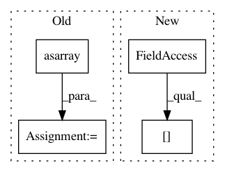

0db94786a7a463fed49825811fac903f1f1fc3c8,python/caffe/classifier.py,Classifier,predict,#Classifier#,49
Before Change
for N images and C classes.
// Scale to standardize input dimensions.
inputs = np.asarray([caffe.io.resize_image(im, self.image_dims)
for im in inputs])
if oversample:
// Generate center, corner, and mirrored crops.
inputs = caffe.io.oversample(inputs, self.crop_dims)
After Change
// Scale to standardize input dimensions.
input_ = np.zeros((len(inputs),
self.image_dims[0], self.image_dims[1], inputs[0].shape[2]),
dtype=np.float32)
for ix, in_ in enumerate(inputs):
input_[ix] = caffe.io.resize_image(in_, self.image_dims)
In pattern: SUPERPATTERN
Frequency: 4
Non-data size: 4
Instances
Project Name: BVLC/caffe
Commit Name: 0db94786a7a463fed49825811fac903f1f1fc3c8
Time: 2014-08-05
Author: shelhamer@imaginarynumber.net
File Name: python/caffe/classifier.py
Class Name: Classifier
Method Name: predict
Project Name: rasbt/mlxtend
Commit Name: f1dd50395b7021c5194b3bd8e5c2900873c91f35
Time: 2015-03-13
Author: se.raschka@me.com
File Name: tests/tests_classifier/test_perceptron.py
Class Name:
Method Name:
Project Name: chris-chris/pysc2-examples
Commit Name: 9ddf959bb26d5d15d4a0c9ddd6821a262866214c
Time: 2017-11-03
Author: sjhshy@gmail.com
File Name: a2c/a2c.py
Class Name: Runner
Method Name: update_obs
Project Name: scikit-image/scikit-image
Commit Name: 032b9901bd393d447d07e9ac547e9ac347527789
Time: 2020-03-13
Author: rfezzani@gmail.com
File Name: skimage/measure/_find_contours.py
Class Name:
Method Name: find_contours